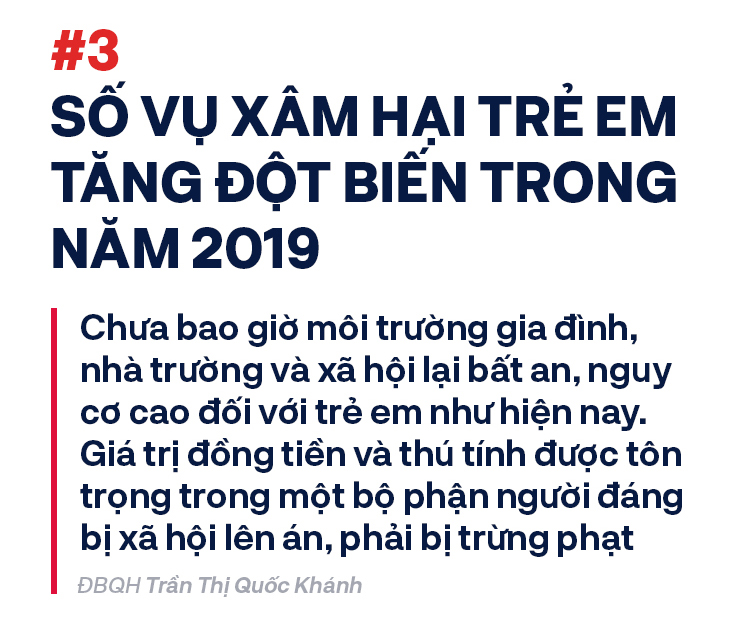

Ngay tháng đầu tiên của năm 2019, hai cựu Thứ trưởng Bộ Công an Bùi Văn Thành, Trần Việt Tân cùng Vũ “nhôm” ra tòa trong vụ án thâu tóm đất “vàng” tại TP HCM, Đà Nẵng, trị giá hàng nghìn tỷ đồng.
Cùng bị truy tố tội Thiếu trách nhiệm gây hậu quả nghiêm trọng mà cáo trạng xác định, sau 2 cấp xét xử, cựu Thứ trưởng Bùi Văn Thành bị tuyên án 30 tháng tù, cựu Thứ trưởng Trần Việt Tân 36 tháng tù. Vũ “nhôm” bị tuyên 15 năm tù. Hai cựu sĩ quan Tổng cục tình báo Bộ Công an cũng đều lĩnh án đến 4 năm tù.
Tháng 9 năm 2019, cựu Thứ trưởng Bộ Lao động Thương binh và Xã hội Lê Bạch Hồng cùng đồng phạm ra tòa vụ án xảy ra tại Bảo hiểm xã hội Việt Nam, gây thiệt hại khoảng 1.700 tỷ đồng. Bị cáo Lê Bạch Hồng sau đó bị tuyên phạt 6 năm tù.
Tháng cuối cùng của năm 2019, 2 cựu Bộ trưởng Thông tin – Truyền thông Nguyễn Bắc Son, Trương Minh Tuấn cùng 12 đồng phạm ra tòa liên quan thương vụ MobiFone mua AVG.
Cáo trạng cũng xác định, các bị cáo đã gây thiệt hại 6.590 tỷ đồng cho Ngân sách. Đối với cựu Bộ trưởng Nguyễn Bắc Son đã nhận hối lộ từ Phạm Nhật Vũ số tiền 3 triệu USD, Trương Minh Tuấn nhận 200.000 USD, Lê Nam Trà - cựu Chủ tịch MobiFone nhận 2,5 triệu USD, Cao Duy Hải - cựu Tổng Giám đốc MobiFone nhận 500.000 USD.
Cựu Bộ trưởng Nguyễn Bắc Son bị tuyên án với 2 tội danh, trong đó, chung thân về tội nhận hối lộ; Trương Minh Tuấn bị tuyên tổng hình phạt 14 năm tù.
Cuối tháng 12 năm 2019, phiên xử ông Nguyễn Hữu Tín, cựu Phó Chủ tịch UBND TP Hồ Chí Minh và 4 đồng phạm liên quan đến vụ thâu tóm “đất vàng” cho Vũ “nhôm” cũng đã được xét xử. Ông Tín bị tuyên 7 năm tù.
Ngoài các “đại án” trên, ngay trong những ngày đầu năm 2020, vụ án Vũ “nhôm” cùng 2 cựu Chủ tịch Đà Nẵng liên quan vi phạm chuyển nhượng đất công sẽ được đưa ra xét xử.
Cùng với đó, năm qua, nhiều “đại án”khác liên quan Nhật Cường, gang thép Thái Nguyên… đang được điều tra, làm rõ với nhiều cựu quan chức bị khởi tố, bắt giam cho thấy quyết tâm trong đấu tranh phòng chống tham nhũng của Đảng, Nhà nước.
Nếu như cách đây 22 năm (năm 1997)vụ án lịch sử của ông trùm Vũ Xuân Trường cùng đồng bọn, lượng ma túy bị thu giữ hơn 4 tạ thì đến nay, đã có những vụ lượng ma túy thu giữ lên tới hơn 1 tấn.
Cùng bị truy tố tội Thiếu trách nhiệm gây hậu quả nghiêm trọng mà cáo trạng xác định, sau 2 cấp xét xử, cựu Thứ trưởng Bùi Văn Thành bị tuyên án 30 tháng tù, cựu Thứ trưởng Trần Việt Tân 36 tháng tù. Vũ “nhôm” bị tuyên 15 năm tù. Hai cựu sĩ quan Tổng cục tình báo Bộ Công an cũng đều lĩnh án đến 4 năm tù.
Tháng 9 năm 2019, cựu Thứ trưởng Bộ Lao động Thương binh và Xã hội Lê Bạch Hồng cùng đồng phạm ra tòa vụ án xảy ra tại Bảo hiểm xã hội Việt Nam, gây thiệt hại khoảng 1.700 tỷ đồng. Bị cáo Lê Bạch Hồng sau đó bị tuyên phạt 6 năm tù.
Tháng cuối cùng của năm 2019, 2 cựu Bộ trưởng Thông tin – Truyền thông Nguyễn Bắc Son, Trương Minh Tuấn cùng 12 đồng phạm ra tòa liên quan thương vụ MobiFone mua AVG.
Cáo trạng cũng xác định, các bị cáo đã gây thiệt hại 6.590 tỷ đồng cho Ngân sách. Đối với cựu Bộ trưởng Nguyễn Bắc Son đã nhận hối lộ từ Phạm Nhật Vũ số tiền 3 triệu USD, Trương Minh Tuấn nhận 200.000 USD, Lê Nam Trà - cựu Chủ tịch MobiFone nhận 2,5 triệu USD, Cao Duy Hải - cựu Tổng Giám đốc MobiFone nhận 500.000 USD.
Cựu Bộ trưởng Nguyễn Bắc Son bị tuyên án với 2 tội danh, trong đó, chung thân về tội nhận hối lộ; Trương Minh Tuấn bị tuyên tổng hình phạt 14 năm tù.
Cuối tháng 12 năm 2019, phiên xử ông Nguyễn Hữu Tín, cựu Phó Chủ tịch UBND TP Hồ Chí Minh và 4 đồng phạm liên quan đến vụ thâu tóm “đất vàng” cho Vũ “nhôm” cũng đã được xét xử. Ông Tín bị tuyên 7 năm tù.
Ngoài các “đại án” trên, ngay trong những ngày đầu năm 2020, vụ án Vũ “nhôm” cùng 2 cựu Chủ tịch Đà Nẵng liên quan vi phạm chuyển nhượng đất công sẽ được đưa ra xét xử.
Cùng với đó, năm qua, nhiều “đại án” khác liên quan Nhật Cường, gang thép Thái Nguyên… đang được điều tra, làm rõ với nhiều cựu quan chức bị khởi tố, bắt giam cho thấy quyết tâm trong đấu tranh phòng chống tham nhũng của Đảng, Nhà nước.
Vào tháng 4 năm 2019, cái tên Nguyễn Hữu Linh bắt đầu nóng trên các trang báo và mạng xã hội. Tuy thời điểm đó xảy ra liên tiếp một số vụ sàm sỡ trong thang máy nhưng vụ việc của ông cựu Viện phó VKSND Đà Nẵng được chú ý đặc biệt, bởi nạn nhân là một bé gái.
Cuối tháng 4, Công an Quận 4, TP Hồ Chí Minh đã khởi tố bị can Nguyễn Hữu Linh. Tháng 5 năm 2019, vụ án đưa ra xét xử lần đầu nhưng tòa trả hồ sơ yêu cầu điều tra bổ sung khiến dư luận đặt nhiều dấu hỏi với một số đồn đoán thất vọng.
Tuy nhiên, đến cuối tháng 8 năm 2019, trong phiên xử sơ thẩm lần hai, HĐXX xác định Nguyễn Hữu Linh phạm tội, tuyên phạt 18 tháng tù. Tại phiên phúc thẩm vào tháng 11 năm 2019, tòa tuyên y án sơ thẩm với bị cáo này về tội Dâm ô. Hiện tại, Nguyễn Hữu Linh đã bắt đầu phải thi hành án tại Đà Nẵng.
Cùng trong thời điểm những tháng cuối năm 2019, TAND Hà Nội đã xử sơ thẩm và phiên phúc thẩm đã tuyên phạt Nguyễn Trọng Trình án chung thân vì tội Hiếp dâm người dưới 16 tuổi. Trình bị xác định đã hiếp dâm một bé gái mới 10 tuổi trong vườn chuối ở Chương Mỹ (Hà Nội).
Đây chỉ là 2 trong số rất nhiều vụ án xâm hại trẻ em đã đưa ra xét xử trên cả nước trong năm 2019.
Tháng 12 năm 2019, bà Nguyễn Thanh Hải, Trưởng ban Dân nguyện của UBTVQH cho biết: Riêng TP Hà Nội, chỉ trong 6 tháng đầu năm 2019, số trẻ em bị xâm hại tăng đột biến với con số thống kê 272 trẻ, chiếm 41% số trẻ em bị xâm hại trong cả giai đoạn 2015-2019.
Tỷ lệ trẻ em bị xâm hại tình dục ở nhiều tỉnh cao, chiếm tới 50-70% số trẻ bị xâm hại. Đây là những con số đáng báo động của năm 2019 khiến bất cứ ai nhìn thấy cũng đau lòng. Phẫn nộ hơn, trong năm vừa qua, đối tượng xâm hại tình dục trẻ em bao gồm từ người thân trong gia đình (thậm chí bố đẻ), giáo viên, tổ trưởng dân số, Bí thư đoàn, Bí thư chi bộ đến cán bộ công an…
Các tranh chấp bắt đầu bùng nổ vào năm 2015, khi ông Đặng Lê Nguyên Vũ, Chủ tịch HĐQT tập đoàn Trung Nguyên, họp HĐQT và miễn nhiệm chức vụ Phó TGĐ của vợ mình –bà Lê Hoàng Diệp Thảo. Bà Thảo sau đó đệ đơn ly hôn lên TAND TP. HCM.
Sau 10 lần hòa giải bất thành, mà khá nhiều lần chỉ xoay quanh chi phí cấp dưỡng nuôi con, tháng 1/2019 phiên sơ thẩm đầu tiên của vụ án ly hôn được đưa ra xét xử tại TP. HCM. Tuy nhiên, phiên tòa đầu tiên này buộc phải hoãn.
Trong những phiên tòa sau đó, mâu thuẫn bà Thảo – ông Vũ luôn ở trạng thái căng thẳng với các tranh cãi về công lao với tập đoàn Trung Nguyên, các cáo buộc về tình trạng bệnh tật hay cách cư xử của nhau. Có thời điểm bà Thảo nói muốn hàn gắn lại, nhưng khi tranh cãi đến đỉnh điểm thì bà nói “Ngày hôm nay quyết định ly hôn anh là sáng suốt”.
Tòa sơ thẩm phán quyết chia tài sản theo tỷ lệ 60% cho ông Vũ, 40% cho bà Thảo. Án phí vụ ly hôn lên tới hơn 7 tỷ đồng.
Cả hai bên đều kháng cáo bản án sơ thẩm. Bà Thảo đề nghị hủy án, không đồng ý phán quyết buộc bà giao hết cổ phần cho ông Vũ, và mong muốn đoàn tụ với chồng. Ông Vũ muốn tỷ lệ chia tài sản phải là 70%.
Tháng 12/2019, vụ án được đưa ra xử phúc thẩm. Tòa án bác toàn bộ kháng nghị, chính thức tuyên y án sơ thẩm và khép lại cuộc chiến ly hôn đình đám bậc nhất Việt Nam.
Khi vụ án dần sáng tỏ, các hung thủ lần lượt sa lưới pháp luật, xã hội càng phẫn nộ trước những hành vi tàn độc, vô nhân tính của bọn chúng.
Căn cứ vào kết quả thẩm vấn công khai tại phiên toà ngày 26, 27 tháng 12 năm 2019 và các tài liệu có trong hồ sơ vụ án thể hiện, do không có tiền chi tiêu khi Tết Nguyên đán đã cận kề nên Vì Văn Toán lên kế hoạch bắt cóc con gái bà Trần Thị Hiền nhằm chiếm đoạt số tiền 300 triệu đồng mà các đối tượng cho rằng bà này đã nợ mình sau vụ mua bán ma túy vào năm 2009.
Cáo trạng của Viện kiểm sát nhân dân TP. Điện Biên chỉ rõ rằng sáng ngày 3 tháng 2 năm 2019, Vương Văn Hùng, Bùi Văn Công đến nhà Vì Văn Toán chơi và sử dụng ma túy. Tại đây, bọn chúng thống nhất chiều cùng ngày sẽ lên nhà Công để lên kế hoạch gây án.
Sau đó, Công cũng đồng ý kế hoạch của Vì Văn Toán vì cho rằng bà Hiền nợ hắn ta 30 triệu đồng với lý do vào năm 2017, Hiền mua ma tuý của Công nhưng chưa trả chết.
Để đạt được mục đích đã định, Công rủ rê thêm Phạm Văn Nhiệm, Lường Văn Lả, Lường Văn Hùng để thống nhất việc bắt cóc người, nhằm chiếm đoạt tài sản.
Sau đó, Toán còn hứa hẹn sẽ trả cho Công và đồng bọn mấy chục triệu đồng và cho ma túy để sử dụng.
Sau khi thống nhất kế hoạch, khoảng 18 giờ chiều 30 Tết (ngày 4 tháng 2 năm 2019), Vương Văn Hùng gọi điện thoại cho Cao Mỹ Duyên là con gái bà Hiền để đặt mua 10 con gà và yêu cầu cô gái đưa đến khu vực ít người để đánh lạc hướng sự chú ý của người đi đường.
Trong vai người mua gà, Vương Văn Hùng đã tạo điều kiện để Công dùng chiếc côn bằng kim loại vòng qua cổ nạn nhân Duyên, bắt cóc nạn nhân.
Sau khi bắt cóc Duyên, bọn chúng đưa nạn nhân về nhà Công rồi nhiều lần thực hiện hành vi hiếp dâm nạn nhân từ ngày 4 tháng 2 năm 2019 đến ngày 6 tháng 2 năm 2019. Đến chiều ngày 6 tháng 2, khi thấy nạn nhân đã yếu, bọn chúng liền giết người và phi tang thi thể nhằm che giấu tội ác.
Riêng Vương Văn Hùng và Cầm Văn Chương đã thực hiện một lần hành vi hiếp dâm nạn nhân vào mùng 2 Tết, sau đó cùng Vì Văn Toán, Bùi Văn Công, Phạm Văn Nhiệm, Lường Văn Lả, Lường Văn Hùng, Vương Văn Hùng sát hại nạn nhân.
Trong suốt quá trình phạm tội, Vì Văn Toán được xác định là người chủ mưu, cầm đầu, Bùi Văn Công là người khởi xướng và là người thực hành tích cực, các bị can khác là người thực hành và người giúp sức.
Đáng chú ý, khi thấy điện thoại của Duyên có người gọi đến, Toán nghe và biết đây là chị gái nạn nhân nên đã bảo người đầu dây bên kia cho gặp mẹ là bà Trần Thị Hiền. Toán thông báo việc bắt giữ Duyên, yêu cầu bà Hiền chuyển tiền, nhưng yêu cầu trên không được đáp ứng.
Quá trình Bùi Văn Công và các đồng phạm gây án, Bùi Thị Kim Thu chứng kiến nhưng không báo cơ quan chức năng mà còn khai báo quanh co, chối tội, gây khó khăn cho quá trình điều tra.
Ngày 29 tháng 12 năm 2019, Tòa án nhân dân TP. Điện Biên đã tuyên án tử hình với 6 bị cáo gồm: Vì Văn Toán, Bùi Văn Công, Vương Văn Hùng, Phạm Văn Nhiệm, Lường Văn Lả, Lường Văn Hùng về các tội Giết người, Bắt cóc nhằm chiếm đoạt tài sản, Hiếp dâm.
3 bị cáo còn lại là Bùi Thị Kim Thu bị tuyên 3 năm tù về tội Không tố giác tội phạm.
Phạm Văn Dũng 10 năm tù, Cầm Văn Chương 9 năm tù cùng về tội Hiếp Dâm.
Ngày 1/9, cả nước rúng động khi những hình ảnh vụ anh ruột truy sát cả nhà em trai ở Đan Phượng (Hà Nội) lan truyền trên mạng xã hội. Vì mâu thuẫn liên quan đến rẻo đất chỉ rộng nửa mét, Nguyễn Văn Đông mang dao sang nhà em trai là Nguyễn Văn Hải, chém chết hai vợ chồng ông Hải, con gái và cháu nội mới 1 tuổi của ông Hải. Con dâu ông Hải bị chém thương nặng, may mắn thoát chết.
Hình ảnh Đông xách dao, lồng lộn đi lại đâm chém có lẽ là một trong những khoảnh khắc đáng sợ nhất của năm qua. Với tội ác của mình, án tử hình mà TAND Hà Nội dành cho Nguyễn Văn Đông là hình phạt tất yếu.
Chỉ nửa tháng sau vụ Đan Phượng, tại Thái Nguyên lại xảy ra một thảm án khác: Anh trai đâm chết vợ chồng em gái, đâm thương nặng cháu rể. Nguyên nhân vụ việc được cho là do cháu rể vay toàn bộ tiền dành dụm của bác rồi không chịu trả, trong khi người bác sống trong thiếu thốn, bệnh tật.
Cảm thấy bực tức, người anh (Bùi Xuân Hồng) mang dao bầu, súng và chai xăng đến vợ chồng em gái giải quyết mâu thuẫn, dẫn đến cái chết của hai vợ chồng em gái. Anh Vương (cháu rể Hồng) bị thương nặng, may mắn thoát chết.
Những ngày cuối năm, một vụ thảm án khác xảy ra tại huyện Định Hóa tỉnh Thái Nguyên cướp đi 5 mạng người.
Hung thủ trong vụ này là Hoàng Văn Chín, một người nghiện ma túy, tâm lý bất ổn. Do mâu thuẫn với vợ là chị Ma Thị Hường, thấy chị Hường đòi bỏ đi, Chín giận dữ dùng hung khí đánh vợ đến chết. Chưa hết, sau đó Chín cầm dao đi ra đường, tiếp tục chém chết anh rể là Lường Văn Bánh và 3 người khác, chém bị thương một người, dù những người này hoàn toàn không có xích mích gì với Chín.
Chín bị bắt chỉ 6 tiếng sau khi gây án.
Giang hồ mạng đầu tiên bị bắt giữ vàongày 2 tháng 4 là Ngô Bá Khá (tức Khá "Bảnh", sinh năm 1993). Khá bị Công an xã Tam Sơn, thị xã Từ Sơn (Bắc Ninh), bắt giữ khởi tố về tội Đánh bạc và Tổ chức đánh bạc. Ngoài ra, Khá còn được xác định dương tính với ma túy. Mặc dù vốn chỉ là kẻ vô công rồi nghề, từng có tiền án, tiền sự chuyên xuất hiện với những clip YouTube lời lẽ tục tĩu, côn đồ và các hành vi vi phạm pháp luật như đột xe nhưng vài năm trở lại đây, cái tên Khá "Bảnh" lại thu hút gần 1 triệu người theo dõi, phần lớn là thanh thiếu niên.
Điều đặc biệt, tại phiên tòa xét xử Ngô Bá Khá hồi tháng 11 năm 2019, bất chấp trời mưa có rất nhiều dân anh chị xăm trổ tự nhận là anh em xã hội của Khá và học sinh tập trung phía cổng để theo dõi, chờ để được nhìn “thần tượng” của mình.
Sau đó, Khá “Bảnh” bị tuyên phạt 10 năm 6 tháng tù, phạt truy thu gần 5 tỷ đồng.
Ngay sau khi Khá “Bảnh” bị bắt không lâu thì cũng tại Bắc Ninh, giang hồ mạng Dương Minh Tuyền bị tuyên 32 tháng tù về các tội Gây rối trật tự công cộng và Hủy hoại tài sản.
Dương Minh Tuyền được dân mạng biết đến nhiều và gọi là “thánh chửi” đất Bắc Ninh. Đối tượng này thường tự quay clip chửi bới tục tĩu lên Facebook cá nhân, thu hút hàng triệu lượt xem. Vào năm 2016, mâu thuẫn trong lúc đi hát karaoke, Tuyền đã cầm súng bắn chỉ thiên và cầm dao chửi bới gây rối ở TP. Bắc Ninh.
Ngoài hai giang hồ mạng Khá “Bảnh” và Dương Minh Tuyền đã bị lĩnh án tù, cũng trong năm 2019 còn có một số đối tượng khác bị bắt nhưng chưa đưa ra xét xử như: Phúc XO, Quang Rambo, Huấn “hoa hồng”… Các đối tượng giang hồ này thường có mối quan hệ khá thân thiết với nhau. Những bức ảnh Quang Rambo chụp cùng Khá “Bảnh” hay Huấn “hoa hồng” được các đối tượng đăng tải trên mạng xã hội.
Trong đó, Phúc XO và em trai bị Công an TP. Hồ Chí Minh đã ra lệnh bắt ngày 12 tháng 4 về hành vi Tổ chức sử dụng trái phép chất ma túy.
Trước khi bị bắt, Phúc XO nổi tiếng trên mạng xã hội vì nhận là chủ của dàn môtô có biển số tứ quý, chạy ôtô sang mạ vàng, đeo dây chuyền và nhẫn vàng khổng lồ. Chỉ một thời gian ngắn trước khi bị bắt, Phúc còn khoe vừa làm mũ lưỡi trai giá 2 tỷ đồng.
Tuy nhiên, khi làm việc với cảnh sát, Phúc thừa nhận số vàng hơn 13kg mà Phúc đeo trên người hàng ngày là đồ giả. Anh ta chỉ phô trương trong việc làm ăn của bản thân cũng như gây sự chú ý cho nhiều người. Ngoài ra, công an cũng điều tra, xác định dàn xe biển số tứ quý của Phúc XO đều là biển số giả. Đồng thời, các xe này cũng bị cà mờ số khung, số sườn nên chưa xác định rõ nguồn gốc.
Quang Rambo bị bắt sau Phúc XO vài tháng ở Hà Nội liên quan đến vụ cưỡng đoạt 200 triệu đồng của một giám đốc doanh nghiệp.
Nhóm của Quang thường xuyên lên mạng xã hội livestream các hình ảnh xăm trổ, đầu trọc, đeo kính đen, dây chuyền, nhẫn to, khoe tiền để khuyếch trương thanh thế. Đặc biệt, Facebook cá nhân và kênh YouTube của Quang Rambo có nhiều người theo dõi và cổ vũ, gây ảnh hưởng xấu trong xã hội, nhất là giới trẻ.
Bên cạnh đó, một giang hồ mạng thân thiết của Khá “Bảnh”, Quang Rambo bị công an cho đi cai nghiện bắt buộc là Huấn “hoa hồng”. Huấn “hoa hồng” thường xuyên xuất hiện trên Facebook với các livestream đeo nhiều trang sức vàng bạc, khoe tài sản và có những phát ngôn gây bão.
Theo đại biểu Phạm Tất Thắng - Phó chủ nhiệm Ủy ban Văn hóa, Giáo dục, Thanh niên, Thiếu niên và Nhi đồng của Quốc hội thì những hiện tượng mạng như Khá “bảnh”, Phúc XO, Quang Rambo… đã có nhiều hành vi vi phạm pháp luật, bị cơ quan chức năng xử lý, có những hành vi phản cảm và dùng ngôn từ vô văn hóa nhưng lại được giới trẻ tung hô, thì đây là hành vi lệch chuẩn, thể hiện nhận thức lệch lạc của một bộ phận giới trẻ.
Vụ việc được bắt đầu vào ngày 15 tháng 5 năm 2019, khi chủ căn nhà ở ấp 5, xã Hưng Hòa, huyện Bàu Bàng, tỉnh Bình Dương phát hiện một xác người bị giấu trong thùng nhựa và đổ bê tông. Bất ngờ hơn, ngay ngày hôm sau, khi công an đưa thi thể trong thùng bê tông đi khám nghiệm thì cơ quan chức năng tiếp tục phát hiện thêm một khối bên tông chứa thi thể khác ở bên hông căn nhà nói trên.
Sau khi vào cuộc điều tra, đến ngày 18 tháng 5, Công an tỉnh Bình Dương đã bắt giữ 4 nghi phạm gồm: Phạm Thị Thiên Hà, Trịnh Thị Hồng Hoa, Lê Phú và Lê Ngọc Phương Thảo khi cả nhóm đang chuẩn bị bỏ trốn khỏi một khách sạn trong khu biệt thự ở TP. Thủ Dầu Một. Cùng ngày, công an xác định được danh tính của hai nạn nhân trong khối bê tông là anh Trần Đức Linh (quê Nghệ An) và anh Trần Trí Thành (ngụ quận Phú Nhuận, TP. Hồ Chí Minh).
Ngày 19 tháng 5, Cơ quan cảnh sát điều tra Công an TP. Hồ Chí Minh đã khởi tố vụ án và đấu tranh lấy lời khai các nghi phạm. Sau một thời gian quanh co, đến tối ngày 21 tháng 5 thì các nghi phạm đã bắt đầu khai nhận hành vi giết người của mình.
Theo đó, các nghi phạm khai nhận nhóm 4 đối tượng nữ cùng 2 nạn nhân nam cùng nhau tu luyện một giáo phái lạ. Sau khi tụ tập tu luyện ở nhiều nơi, nhóm đối tượng chuyển về thuê căn nhà ở Bình Dương.
Tuy nhiên, trong quá trình sinh hoạt chung, nhóm các đối tượng nữ nảy sinh mâu thuẫn do 2 nạn nhân nam không chịu nổi sự khắc khổ. Việc nhịn ăn nhịn uống trong suốt 10 ngày tu luyện khiến anh Linh không chịu nổi đã nhảy qua cửa sổ tầng 2 xuống sân để bỏ trốn nhưng bị đối tượng Hà và Thảo phát hiện bắt giữ nhốt lại vào phòng. Khi nạn nhân Linh bị thương và phản kháng, bọn chúng không đưa anh đi bệnh viện cấp cứu mà đánh anh tử vong rồi đưa vào phòng bật điều hòa nhiệt độ thấp nhất để thi thể không bốc mùi.
Sau đó, nhóm của Hà cho thi thể nạn nhân vào thùng phuy nhựa, quấn băng keo kín rồi tiếp tục tu luyện. Sau đó, thấy anh Thành có biểu hiện lạ, hay nhìn phụ nữ, nên Hà nảy sinh ý định giết anh này. Đối tượng Hà và Thảo dùng kích điện làm cho anh Thành bất tỉnh rồi Hà siết cổ nạn nhân tới chết. Sau đó, Hà và Thảo mua thùng nhựa, xi măng về đổ bê tông, phi tang thi thể nạn nhân như đối với nạn nhân Linh. Sau đó, nhóm của Hà tiếp tục thuê một khách sạn trên địa bàn P.Phú Thọ, TP.Thủ Dầu Một, (Bình Dương) để tu luyện cho đến khi bị bắt.
Ngày 18 tháng 9, Cơ quan CSĐT Công an tỉnh Bình Dương đã đưa 4 nghi can đến căn nhà ở ấp 5, xã Hưng Hòa tiến hành thực nghiệm hiện trường vụ án. Vụ án hiện vẫn đang trong quá trình hoàn tất điều tra, chưa có lịch xét xử.
Sự kiện gây chấn động nhất là vào ngày 24 tháng 9 năm 2019, khi người cầm đầu, chủ tịch HĐQT Công ty Alibaba Nguyễn Thái Luyện bị khởi tố, tạm giam để điều tra hành vi Lừa đảo chiếm đoạt tài sản với số tiền giao dịch hơn 2.500 tỷ đồng.
Vụ việc có thể thấy được khởi nguồn từ hành vi chống đối, đập phá xe đoàn cưỡng chế của hàng chục nhân viên Alibaba xảy ra vào ngày 13 tháng 6 năm 2019 tại Vũng Tàu. Đến ngày 27 tháng 11 năm 2019, TAND tỉnh Bà Rịa – Vũng Tàu đã tuyên án 4 bị cáo là nhân viên Alibaba từ 2 năm 6 tháng tù đến 4 năm 6 tháng tù giam về tội “Cố ý làm hư hỏng tài sản” và “Gây rối trật tự công cộng”.
Cùng trong năm đó, qua điều tra, thu thập tài liệu chứng cứ và tháng 9 năm 2019, Cơ quan cảnh sát điều tra Công an TP. Hồ Chí Minh đã ra quyết định khởi tố vụ án “Lừa đảo chiếm đoạt tài sản” xảy ra tại Công ty Alibaba và các công ty có liên quan và khởi tố bị can, bắt tạm giam Nguyễn Thái Lĩnh.
Sau khi bị bắt, từ những thông tin thu tập được kết hợp với lời khai các đối tượng thì bí mật về tập đoàn địa ốc này dần dần được hé lộ. Công an xác định Nguyễn Thái Luyện và em trai là Nguyễn Thái Lĩnh lập ra Công ty Alibaba và các công ty thành viên đã thu gom mua số lượng lớn đất nông nghiệp, trong đó có một số rất ít đất ở tại nông thôn rồi giao cho các cá nhân đứng tên và tự vẽ ra nhiều dự án không có thật tại một số tỉnh phía Nam, chưa làm thủ tục pháp lý, chưa được cơ quan có thẩm quyền phê duyệt, cấp phép cho làm dự án…
Sau đó, các đối tượng thuộc công ty đã tổ chức quảng cáo là đất dự án để bán cho hàng ngàn người và số tiền thu lợi bất chính lên đến cả ngàn tỷ đồng.
Tính đến thời điểm ngày 30 tháng 6 năm 2019, công an xác định Công ty Alibaba giới thiệu, bán đất cho hơn 6.700 khách hàng, với số tiền giao dịch hơn 2.500 tỷ đồng.
Công an TP. Hồ Chí Minh đã phong tỏa tài khoản của 16 người trong gia đình Nguyễn Thái Luyện và nhân viên Alibaba để ngăn chặn tẩu tán tài sản.
Ngày 30 tháng 9 năm 2019, Cơ quan cảnh sát điều tra Công an TP.Hồ Chí Minh đã ra quyết định bổ sung quyết định khởi tố vụ án hình sự về tội "rửa tiền” và tiếp tục bắt tạm giam em trai út của Luyện và Lĩnh là Nguyễn Thái Lực.
Lực được xác định là người báo cáo tiến trình pháp lý tất cả các dự án để Luyện biết và có ý kiến chỉ đạo.
Lực không chỉ đại diện trước pháp luật của 2 công ty địa ốc mà còn đứng tên cá nhân nhận chuyển nhượng nhiều thửa đất nông nghiệp và đất ở do Luyện mua tại tỉnh Đồng Nai, tỉnh Bà Rịa - Vũng Tàu, quận Thủ Đức và đứng tên một số tài khoản ngân hàng nhận tiền chuyển nhượng đất.
Với những tài liệu thu thập được, cơ quan điều tra nhận định anh em Luyện hoạt động với phương thức, thủ đoạn tinh vi núp bóng dưới hoạt động kinh doanh bất động sản. Thực chất, các đối tượng lừa đảo chiếm đoạt tài sản thông qua hình thức huy động vốn theo phương thức đa cấp, trong đó sử dụng đất nền trong dự án “ma” làm mồi nhử các khách hàng.
Phó Thủ tướng Thường trực Trương Hòa Bình đã yêu cầu sớm đưa vụ án ra xét xử và thu hồi tài sản do các hành vi phạm tội mà có, đồng thời nếu phát hiện có sự bao che của cán bộ, công chức các cơ quan nhà nước thì cần sớm xác minh, làm rõ để xử lý nghiêm theo quy định pháp luật.